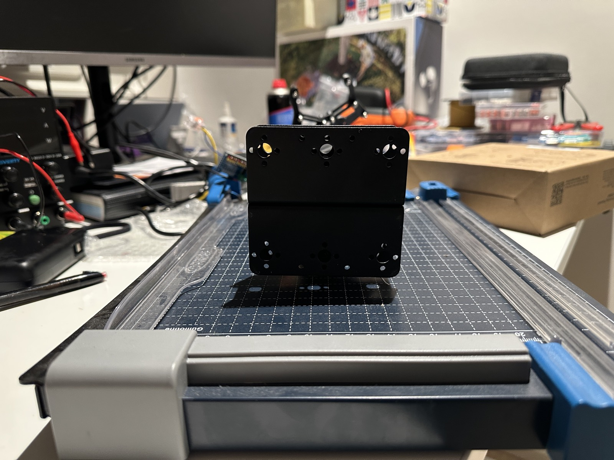
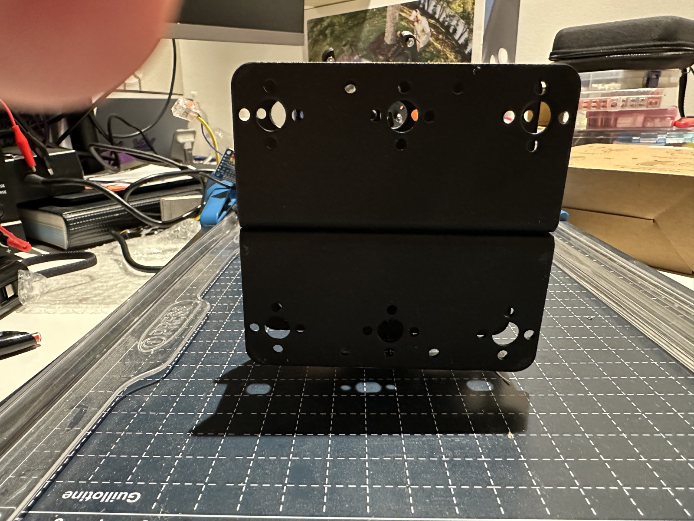
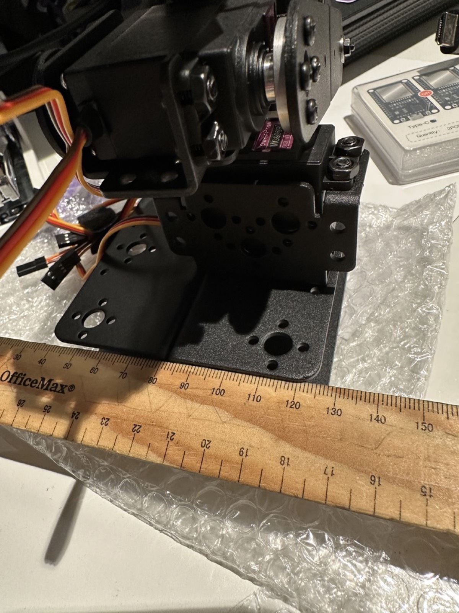
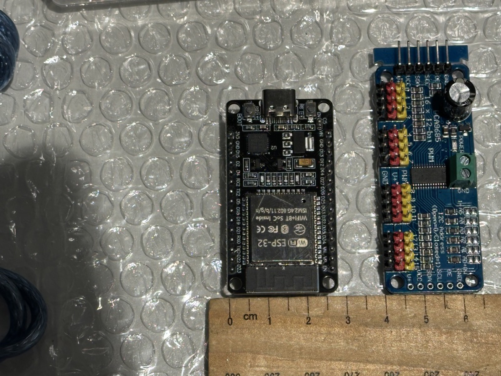
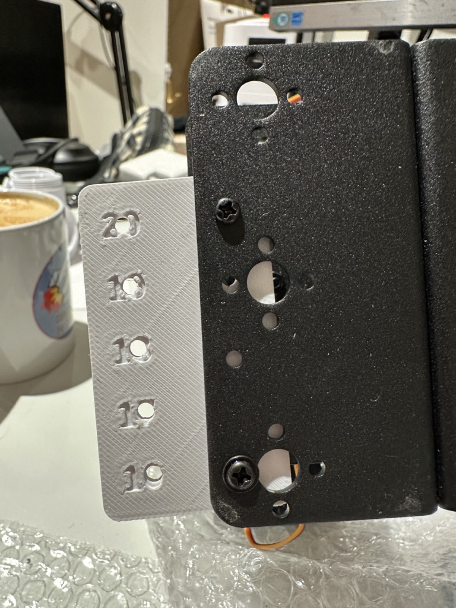
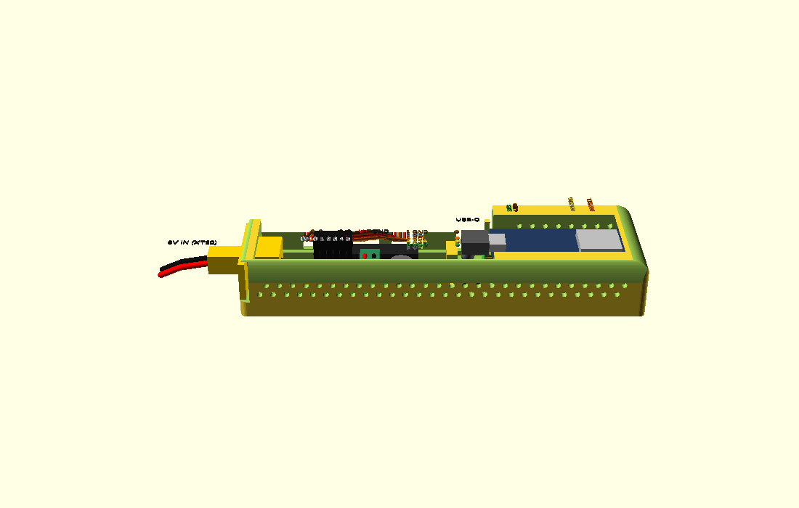
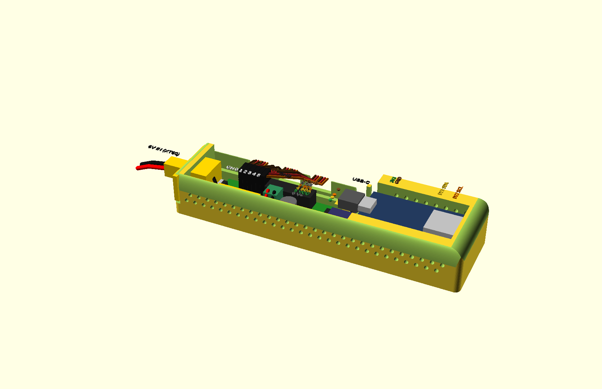
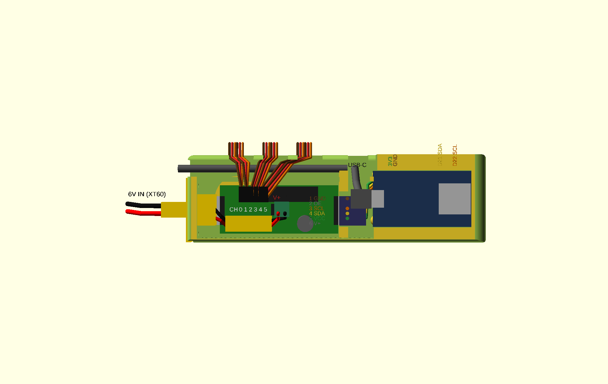

3D Printing the Board Mounts¶
Custom enclosures mount the ESP32 and PCA9685 to the arm's existing metal
brackets. The designs are parametric OpenSCAD sources in hardware/openscad/;
you export STLs into hardware/stl/ yourself after setting the measured
parameters (the bracket hole spacing is a measured input, so no
one-size-fits-all STL is committed).
Mounting anatomy¶
The printed "electronics spine" (hardware/openscad/electronics_spine.scad)
bolts to the arm's black metal base plates — the folded U-channel bracket at the
arm's foot. Seen face-on, each plate face carries a repeating,
left-right-symmetric hole pattern: paired small holes flanking larger bores,
with a circular bolt-circle around a central bore where a servo boss sits. The
evenly spaced small-hole pairs are the features the mounts' M3 "ear" pairs
(nominally 18 mm center-to-center) bolt through, so the printed part hangs off
the existing plate without new drilling.


Workflow¶
1. Measure the bracket holes¶
The mounts bolt onto the arm's existing metal brackets, and hole spacing is a measured input, not a preset — measure before printing anything:
- Center-to-center spacing of the bracket holes (calipers).
- Hole diameter (and the screw size you'll use).
- Bracket thickness and any clearance constraints around the mounting spot (servo horns, wiring paths).

Also measure the footprint of the boards the mount will hold — the ESP32 dev board and the PCA9685 driver — so the pocket and standoffs fit:

1b. Print the spacing test plate first¶
Ruler measurements are ballpark; screw holes are not. Before printing any
mount, print hardware/stl/bracket_test_plate.stl (source:
hardware/openscad/bracket_test_plate.scad) — a 5-minute PLA coupon with
labelled M3 hole pairs at 16/17/18/19/20 mm center-to-center. Hold it on the
bracket and find the row where two M3 screws drop through plate and
bracket freely, then set that spacing as bracket_hole_spacing_mm in
hardware/openscad/common_params.scad. If screws bind even on the correct
row, open up bracket_screw_hole_d instead — that's clearance, not spacing.

bracket_hole_spacing_mm.2. Set the variables and export¶
Open the relevant .scad file from hardware/openscad/ in
OpenSCAD and set the parameters at the top of the
file (bracket hole spacing, hole diameter, board choice) to your measured
values. Preview (++f5++), render (++f6++), then export the STL (++f7++ or
File → Export → Export as STL…). Keep exported STLs in hardware/stl/ so
the printed geometry stays reproducible.
3. The first print is the fit check¶
Treat print #1 of any new or re-parameterized design as a prototype: bolt it
to the actual bracket, seat the boards, and check screw alignment, wire
clearance, connector seating and USB-C access before trusting it. Iterate the
.scad variables until it fits.
Print that fit check in PETG (the final material) once your PETG process is dialled — which it is on this P2S. Fit clearances and snap/flex behaviour differ between materials, so a fit validated in PLA doesn't fully transfer; the material cost difference is pennies. PLA-first still makes sense for brand-new, wholly unmeasured geometry (like the spacing test plate) or rapid-fire iteration sessions. Either way the keeper part is PETG — it tolerates heat and load far better than PLA for a part living on a moving arm. To de-risk a big revision cheaply, print the highest-risk part alone (usually the spine body) before committing the full multi-colour plate.
Print settings (Bambu Lab P2S)¶
| Setting | PLA fit-check | PETG final |
|---|---|---|
| Purpose | dimension/fit verification | permanent mount |
| Walls / perimeters | default (2–3) | 4 or more |
| Infill | ~15% | ~30% |
| Layer height | 0.2mm | 0.2mm |
| Notes | any color, fastest profile is fine | dry filament helps PETG surface quality; slower speeds reduce stringing |
Assembly¶
- Bolt the PETG enclosure to the metal bracket using the measured holes.
- Seat the board; route the I2C run and the thick converter → V+ wires so they cannot be snagged by arm motion (see Install → Hardware for the wiring rules).
- Confirm USB-C (ESP32) and the V+ terminal block (PCA9685) stay accessible after mounting.
Add photos of your fit checks and final mounts to the gallery.
Enclosure print job (phase 2)¶
Ready-made Bambu Studio project: hardware/arm_electronics.3mf — one
plate carrying the Pi case (base + two-colour lid) and the electronics
spine (body + two-colour lid). Both lids print face-down with the shared
robot-arm-and-raspberry motif inlaid in two colours (arm + leaf =
filament 2, raspberry = filament 3). Configured for the P2S: 0.4 nozzle,
0.20mm Standard, textured PEI plate, 3x PETG Basic — intended palette
black lid / white arm / red raspberry; map the slots, slice, print. The TPU 95A feet
(hardware/stl/pi4_case_feet.stl) print as a separate job — TPU doesn't
co-plate with PETG.
The project is a generated artifact: rebuild it after any .scad change
with ./hardware/make_print_project.sh (needs OpenSCAD and
BambuStudio's CLI; the script bakes plate positions, filament mapping,
bed type, and colours).
v2 fit-check revisions¶
Lessons from the first printed set, designed back into the sources:
- No supports, no bridges: every wall opening on both enclosures is now open-topped — the lid closes the top of each port/slot instead of the base bridging over it.
- Pi lid snaps on (v1's friction skirt wouldn't stay down): ramped bumps on the skirt click into small windows through the walls; press a fingernail into a window to release. The skirt is also relieved over the USB/Ethernet stack and the port-side opening — the "indent" that had to be hand-cut into the v1 lid.
- Pi case is one punch-row lower (24mm inner) and the GPIO jumpers now exit through the same open-topped side opening as the power/HDMI ports — no separate slot on the GPIO side.
- ESP32 rides components-up on four corner standoffs: the board sits pins-down on 14.5mm standoffs at its own screw holes (M2.5 into the pilots; hole spacing is a measure-me in the source — 46.5x23.3 assumed). Point supports instead of rails leave the underside open, so the four I2C Dupont shells hanging from the hookup pins stay reachable from the side even with the board seated. The antenna faces UP, directly under the lid's hexagon vent (no RF penalty), the USB-C plug rides high above the PCA9685's horizontal I2C housings, and nothing above the board tops ~21mm. No soldering on the ESP32; the board stays replaceable.
- Proper 6V power inlet — zero solder: the entry wall carries a
panel-mount opening sized for the Amass XT60E-F in hand (34×16
gasketed flange, ears at 25mm, body passing ~9mm through the panel;
parametric via
pwr_*). With the replacement blue PCA9685's working mid-board screw terminal, the whole power path is now solder-free: panel XT60 → inline XT60 service disconnect → screw terminal. The old board's dead-FET bypass story is retired with the old board. - Right-angle end headers accounted for: the PCA9685's 6-pin breakouts point horizontally out past both board ends. The board datum sits 7.5mm off the entry wall so the unused entry-end pins float free, the XT60 inlet rides higher in the entry wall so its body and solder cups pass above them, and the divider is notched so the I2C Dupont housings plug straight on at the divider end — crossing just above the USB-C plug (plug USB first, I2C second).
- Spine underside clears the arm's own hardware — either way round: the arm's proud screws sit a further 18mm outboard of each outer mount hole (row: screw, 18, hole, 18, hole, seam — mirrored), and both spots carry the same relief: a circular recess for screw heads with an elongated through-slot in its middle for a screw-tip-and-nut stack (elongated to match the ±2mm seam-movement slots). Mount the spine in whichever orientation; either end absorbs either protrusion. Keep the seam screw's tip trimmed near-flush with its nut (≤4mm stack).
- Low inner walls: the raceway wall is an 8mm curb and the bay divider a plain 10mm wall — with every opening top-loaded and the lid closing the roof, wires simply cross over them (the I2C run crosses the notched divider; the USB cable stays behind the curb). v1's full-height inner walls boxed in the USB plug bay.
- Streamlined outside: the box is only full-height where the interior needs it. The whole wiring tier — cable trough, USB entry and the three servo-lead slots — drops to 13mm and sits on the BACK face (the board's servo-header side), so every wire enters and leaves on one side and the front is a single clean tall wall, and the ESP32 nose section is centred on the arm's mount line, both long faces sweeping in to it with rounded plan blends. The long top edges, nose and entry edges carry proper round-overs (convex, upward-facing — they print clean, unlike a cove over the open trough, which is why the shape uses round-overs rather than scooped curves). The old wide antenna opening is a solid rounded nose now, vented by a hexagon through the lid over the RF can — and the nose tapers in height as well: an integral 45° roof (the steepest support-free interior ceiling) closes the bay's last stretch, dropping the profile from 24mm to ~15mm at the tip, starting just past the tallest component (the D22 Dupont shell). The lid follows the body as a jogged plate: wide over the PCA run (with four feet onto the curb between the servo-lead windows), narrow and centred over the nose.
Component placement¶
hardware/openscad/spine_assembly.scad is a non-printed documentation
model — the spine body with mock boards, the XT60 panel inlet, the
inline XT60 service disconnect (lengthwise along the board's back
edge), the 6V feed and the USB-C run placed in situ:

hardware/openscad/spine_assembly.scad in OpenSCAD and
press F5 — drag to orbit, scroll to zoom (preview keeps the
colours).

Keel base concept (phase 3, in progress)¶
hardware/openscad/keel_base.scad (v3.7) is the next-generation
alternative to the on-arm spine: an integrated base plinth UNDER the arm
— slide-out board drawers, a WAGO servo-power junction with a lift-out
Dupont coupler comb, an aft power chamber (12V barrel + USB-C PD via
HUSB238/ORing into the buck), arm adapter plate, optional desk clamps.
Full rationale, honest review (including the free-standing tipping
numbers) and the interactive concept viewer live in
hardware/keel-concept/. Blocked on the MEASURE-ME items listed there
before final printing; fit-check parts can print now.